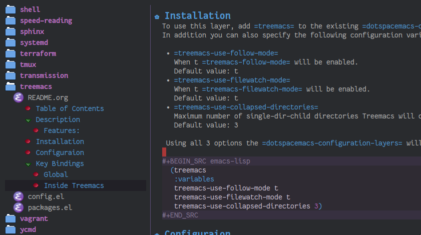

Treemacs layer
Table of ContentsClose

1. Description
This layer sets up a file navigation and project explorer side-window via Treemacs.
1.1. Features:
A detailed overview of the features of Treemacs is available in the Treemacs readme. In short, Treemacs offers:
- Simple and powerful navigation and ability to detail exactly how and where a file should be opened.
- Good looking icons.
- Display of multiple file trees organized as projects residing in a workspace.
- Ability to show tags contained in files. Tags are provided by Imenu, so nearly every filetype is supported.
- Mouse interface for single and double left clicks in line with modern GUI standards (clicking on an icon will also display the file's tags).
- Location awareness: commands like
find-fileormagit-statuswill use the location of the node at point (with$HOMEas fallback). - Optional fontifying of files based on their git status.
- Optional collapsing of single-dir-child directories into one.
- Doing both asynchronously for an imperceptible performance cost.
- Optional
follow-modeto automatically focus the currently selected file or tag. - Optional
filewatch-modeto automatically refresh the view after (and only after) changes to the shown filesystem.
2. Install
To use this layer, add treemacs to dotspacemacs-configuration-layers in your
dotspacemacs file.
3. Configuration
3.1. Follow mode
To have Treemacs automatically sync with your current:
- Buffer's file, set the layer variable
treemacs-use-follow-modetot. - Tag, set the layer variable
treemacs-use-follow-modetotag.
(setq-default dotspacemacs-configuration-layers '( (treemacs :variables treemacs-use-follow-mode 'tag)))
Default is t.
3.2. File watch
To automatically refresh the Treemacs buffer when there is a change in the
part of the file system shown by treemacs set the layer variable
treemacs-use-filewatch-mode to non-nil.
(setq-default dotspacemacs-configuration-layers '( (treemacs :variables treemacs-use-filewatch-mode t)))
Default is t.
3.3. Scope Settings
By default treemacs buffers and their workspaces will be uniquely scoped within
the current frame. As an alternative it is possible to scope treemacs to the
currently active perspective, including the automatic creation of a workspace
for every perspective. The scope type is determined by setting the layer
variable treemacs-use-scope-type to either 'Frames or 'Perspectives.
Note that persective-based scoping will only take effect when persp-mode is
actually first used.
(setq-default dotspacemacs-configuration-layers '( (treemacs :variables treemacs-use-scope-type 'Perspectives)))
Default is 'Frames.
3.4. Git mode
To enable Treemacs to check for the git status information of files and directories
and highlight them accordingly, set the layer variable treemacs-use-git-mode
to simple, extended, or deferred. See the Treemacs documentation for a more detailed
explanation.
(setq-default dotspacemacs-configuration-layers '( (treemacs :variables treemacs-use-git-mode 'deferred)))
Default is nil.
3.5. Flattening of directories
This feature requires Python to be installed.
Treemacs tries to flatten empty directory names into one name. It is possible
to control how deep Treemacs will search for empty directories by settings the
layer variable treemacs-collapse-dirs to a positive number.
(setq-default dotspacemacs-configuration-layers '( (treemacs :variables treemacs-collapse-dirs 3)))
Default is 3 (or 0 when Python is not installed).
3.6. Locking width
To have the width of the treemacs window locked by default, so that it is not manually
resizable, set the variable treemacs-lock-width to non-nil. It will still be
resizable through Treemacs commands and key bindings.
(setq-default dotspacemacs-configuration-layers '( (treemacs :variables treemacs-lock-width t)))
Default is nil.
3.7. Theme
To use the `all-the-icons` theme rather than the default one, set the `treemacs-use-all-the-icons-theme` variable:
(setq-default dotspacemacs-configuration-layers '( (treemacs :variables treemacs-use-all-the-icons-theme t)))
4. Key bindings
4.1. Global
| Key binding | Description |
|---|---|
M-0 |
Selected the treemacs window. Actually selects window #10, which is always assigned to treemacs. |
SPC 0 |
Open treemacs in the current directory. When not visiting a file use $HOME as fallback. With a prefix arg manually select the root instead. |
SPC f B |
Find and select a bookmark. If it cannot be found rebuild view with the bookmark's location as root. Also open the bookmark with a prefix arg. |
SPC f t |
Hide/show existing treemacs buffer. Create one for the current directory if no buffer exists. |
SPC f T |
Manually focus the treemacs view on the currently selected file. Not needed when treemacs-follow-mode is enabled. |
SPC f M-t |
Manually focus the treemacs view on the currently selected file and tag. |
SPC p t |
Hide/show existing treemacs buffer. Add the current project to treemacs if not already added. |
4.2. Inside Treemacs
Treemacs will use either j/k or n/p to go to the next/previous line,
depending on whether vim/hybrid editing style is used. Likewise refresh is only
bound to g when emacs editing style is used, since under vim g is a prefix for
many other commands.
| Key binding | Description |
|---|---|
? |
Summon the helpful hydra to show you the treemacs keymap. |
M-j/M-n |
Select next node at the same depth as currently selected node, if possible. |
j/n |
Goto next line. |
k/p |
Goto previous line. |
M-J/N |
Go to the next line in next-window. |
M-K/P |
Go to the previous line in next-window.. |
M-j/M-n |
Select next node at the same depth as currently selected node, if possible. |
M-k/M-p |
Select previous node at the same depth as currently selected node, if possible. |
C-c C-p a |
Select a new project to add to the treemacs workspace. |
C-c C-p p |
Select a projectile project to add to the workspace. |
C-c C-p d |
Remove project at point from the workspace. |
C-c C-p r |
Rename project at point. |
w |
Set a new value for the width of the treemacs window. |
TAB |
Do what I mean (as defined in treemacs-TAB-actions-config). Prefers expanding nodes by default. |
RET |
Do what I mean (as defined in treemacs-RET-actions-config). Prefers visiting nodes by default. |
mouse1 |
Move point to clicked line |
2x mouse1 |
Do what I mean (as defined in treemacs-doubleclick-actions-config). Behaves like RET by default. |
g/r/gr |
Refresh and rebuild the treemacs buffer. |
d |
Delete node at point. A delete action must always be confirmed. Directories are deleted recursively. |
cf |
Create a file. |
cd |
Create a directory. |
R |
Rename the currently selected node. Reload buffers visiting renamed files or files in renamed directories. |
u |
Select parent of selected node, if possible. |
q |
Hide/show an existing treemacs buffer. |
Q |
Kill the treemacs buffer. |
ov |
Open current file or tag by vertically splitting next-window. |
oh |
Open current file or tag by horizontally splitting next-window. |
oo |
Open current file or tag, performing no split and using next-window directly. |
oaa |
Open current file or tag, using ace-window to decide which window to open the file in. |
oah |
Open current file or tag by horizontally splitting a window selected by ace-window. |
oav |
Open current file or tag by vertically splitting a window selected by ace-window. |
ox |
Open current file according to its mime type in an external application. Linux, Windows and macOS are supported. |
tf |
Toggle treemacs-follow-mode. |
ta |
Toggle treemacs-filewatch-mode. |
tg |
Toggle git-mode. |
th |
Toggle the hiding and displaying of dotfiles. |
tw |
Toggle whether the treemacs buffer should have a fixed width. |
tv |
Toggle the hiding and displaying of dotfiles. |
yr |
Copy the absolute path of the nearest project node at point. |
yy |
Copy the absolute path of the node at point. |
4.2.1. Ace mode to open files
It is possible to open the file under cursor in exact the window you want.
By default you have to press o a a to run ace selection mode and choose
the window with keys a s d f.
That behavior can be changed in two ways.
- Set ace mode as default action
It is possible to set
ace modeas default action for pressing RET on a file. To do this add following configuration to your dotfile.(with-eval-after-load 'treemacs (treemacs-define-RET-action 'file-node-closed #'treemacs-visit-node-ace) (treemacs-define-RET-action 'file-node-open #'treemacs-visit-node-ace))
- Use digits in ace mode
Just add the following to use digits instead of
a s d fin ace (window selection) mode. Please note that the following code changes ace mode globally.(setq aw-keys '(?1 ?2 ?3 ?4 ?5 ?6 ?7 ?8 ?9 ?0))